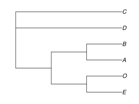
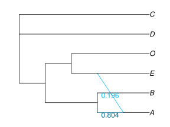
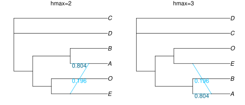
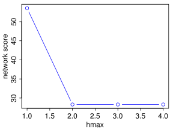
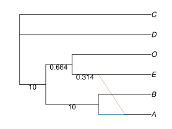
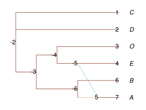

Getting a Network
Network Estimation
SNaQ implements the statistical inference method in Solís-Lemus and Ané 2016. The procedure involves a numerical optimization of branch lengths and inheritance probabilities and a heuristic search in the space of phylogenetic networks.
After Input for SNaQ, we can estimate the network using the input data raxmlCF and starting from tree (or network) astraltree. We first impose the constraint of at most 0 hybrid node, that is, we ask for a tree.
net0 = snaq!(astraltree,raxmlCF, hmax=0, filename="net0", seed=1234)Part of the screen output shows this:
MaxNet is (C,D,((B,A):1.395762055180493,(O,E):0.48453400554506426):10.0);
with -loglik 53.53150526187732This parenthetical (extended Newick) description is not very human-friendly, so we plot the tree (more about plotting networks below: Network Visualization ).
using PhyloPlots
plot(net0, :R);RCall.RObject{RCall.IntSxp}
pdf
2
We can use this tree as a starting point to search for the best network allowing for at most hmax=1 hybrid node (which is the default).
net1 = snaq!(net0, raxmlCF, hmax=1, filename="net1", seed=2345)part of screen output:
best network and networks with different hybrid/gene flow directions printed to .networks file
MaxNet is (C,D,((O,(E,#H7:::0.19558838614943078):0.31352437658618976):0.6640664399202987,(B,(A)#H7:::0.8044116138505693):10.0):10.0);
with -loglik 28.31506721890958We can visualize the estimated network and its inheritance values γ, which measure the proportion of genes inherited via each parent at a reticulation event (e.g. proportion of genes inherited via gene flow).
plot(net1, :R, showGamma=true);RCall.RObject{RCall.IntSxp}
pdf
2
This network has A as a hybrid, 80.4% sister to B, and 19.6% sister to E (which is otherwise sister to O). C & D are sister to each other. We can also check the output files created by snaq!:
less("net1.err") # would provide info about errors, if any
less("net1.out") # main output file with the estimated network from each run
less("net1.networks") # extra infowhen viewing these result files with less within Julia, use arrows to scroll down and type q to quit viewing the files. The file net1.networks contains a list of networks that are slight modifications of the best (estimated) network net1. The modifications changed the direction of one reticulation at a time, by moving the placement of one hybrid node to another node inside the same cycle. For each modified network, the pseudolikelihood score was calculated.
The function name snaq! ends with ! because it modifies the argument raxmlCF by including the expected CF. Type ? then snaq! to get help on that function.
The main output file, here net1.out (or snaq.out by default) has the estimated network in parenthetical format, but we can also print it directly to the screen:
julia> net1
HybridNetwork, Rooted Network
12 edges
12 nodes: 6 tips, 1 hybrid nodes, 5 internal tree nodes.
tip labels: C, D, O, E, ...
(C,D,((O,(E,#H7:::0.196):0.314):0.664,(B,(A)#H7:::0.804):10.0):10.0);
julia> writeTopology(net1) # writes to screen, full precision for branch lengths and γ
"(C,D,((O,(E,#H7:::0.19558838614943078):0.31352437658618976):0.6640664399202987,(B,(A)#H7:::0.8044116138505693):10.0):10.0);"
julia> writeTopology(net1, round=true, digits=2)
"(C,D,((O,(E,#H7:::0.2):0.31):0.66,(B,(A)#H7:::0.8):10.0):10.0);"
julia> writeTopology(net1,di=true) # γ omitted: for dendroscope
"(C,D,((O,(E,#H7):0.31352437658618976):0.6640664399202987,(B,(A)#H7):10.0):10.0);"
julia> writeTopology(net1, "bestnet_h1.tre") # writes to file: creates or overwrites fileThe option di=true is for the parenthetical format used by Dendroscope (without reticulation heritabilities). Copy this parenthetical description and paste it into Dendroscope, or use the plotting function described below.
We can go on and let the network have up to 2 or 3 hybrid nodes:
net2 = snaq!(net1,raxmlCF, hmax=2, filename="net2", seed=3456)
net3 = snaq!(net0,raxmlCF, hmax=3, filename="net3", seed=4567)and plot them (they are identical and they both have a single reticulation):
using RCall # to be able to tweak our plot within R
R"layout(matrix(1:2, 1, 2))" # to get 2 plots into a single figure: 1 row, 2 columns
R"par"(mar=[0,0,1,0]) # for smaller margins
plot(net2, :R, showGamma=true);
R"mtext"("hmax=2") # add text annotation: title here
plot(net3, :R, showGamma=true);
R"mtext"("hmax=3")RCall.RObject{RCall.IntSxp}
pdf
2
with this screen output for net2 (only 1 hybrid node found):
MaxNet is (C,D,((B,(A)#H7:::0.804411606649347):10.0,(O,(#H7:::0.19558839335065303,E):0.3135243143217013):0.664066456871298):10.0);
with -loglik 28.31506721890957and this output for net3 (again, only 1 hybrid found):
MaxNet is (D,C,((O,(E,#H7:::0.19558839257941849):0.3135243301652981):0.6640664138384673,(B,(A)#H7:::0.8044116074205815):10.0):10.0);
with -loglik 28.315067218909626parallel computations
For network estimation, multiple runs can done in parallel. For example, if your machine has 4 or more processors (or cores), you can tell julia to use 4 processors by starting julia with julia -p 4, or by starting julia the usual way (julia) and then adding processors with:
using Distributed
addprocs(4)If we load a package (using PhyloNetworks) before adding processors, then we need to re-load it again so that all processors have access to it:
@everywhere using PhyloNetworksAfter that, running any of the snaq!(...) command will use different cores for different runs, as processors become available. Fewer details are printed to the log file when multiple cores are used in parallel.
When running bootsnaq, the analysis of each bootstrap replicate will use multiple cores to parallelize separate runs of that particular bootstrap replicate. You may parallelize things further by running bootsnaq multiple times (on separate machines for instance), each time for a small subset of bootstrap replicates, and with a different seed each time.
We may tell julia to add more processors than our machine has, but we will not receive any performance benefits. At any time during the julia session, nworkers() tells us how many worker processors julia has access to.
Below is an example of how to use a cluster, to run many independent snaq! searches in parallel on a cluster running the slurm job manager (other managers would require a different, but similar submit file). This example uses 2 files:
- a julia script file, to do many runs of
snaq!in parallel, asking for many cores (default: 10 runs, asking for 10 cores). This julia script can take arguments: the maximum allowed number of hybridizationshmax, and the number of runs (to run 50 runs instead of 10, say). - a submit file, to launch the julia script.
First: the example julia script, below, is assumed (by the submit file) to be called runSNaQ.jl. It uses a starting tree that is assumed to be available in a file named astraltree.tre, but that could be modified (to use a network with h=1 to start the search with hmax=2 for instance). It also assumes that the quartet concordance factor data are in file tableCF_speciesNames.csv. Again, this file name should be adjusted. To run this julia script for 50 runs and hmax=3, do julia runSNaQ.jl 3 50.
#!/usr/bin/env julia
# file "runSNaQ.jl". run in the shell like this in general:
# julia runSNaQ.jl hvalue nruns
# example for h=2 and default 10 runs:
# julia runSNaQ.jl 2
# or example for h=3 and 50 runs:
# julia runSNaQ.jl 3 50
length(ARGS) > 0 ||
error("need 1 or 2 arguments: # reticulations (h) and # runs (optional, 10 by default)")
h = parse(Int, ARGS[1])
nruns = 10
if length(ARGS) > 1
nruns = parse(Int, ARGS[2])
end
outputfile = string("net", h, "_", nruns, "runs") # example: "net2_10runs"
seed = 1234 + h # change as desired! Best to have it different for different h
@info "will run SNaQ with h=$h, # of runs=$nruns, seed=$seed, output will go to: $outputfile"
using Distributed
addprocs(nruns)
@everywhere using PhyloNetworks
net0 = readTopology("astraltree.tre");
using CSV
df_sp = CSV.read("tableCF_speciesNames.csv", categorical=false);
d_sp = readTableCF!(df_sp);
net = snaq!(net0, d_sp, hmax=h, filename=outputfile, seed=seed, runs=nruns)When julia is called on a script, whatever comes after "julia scriptname" is given to julia in an array of values. This array is called ARGS. So if we call a script like this: julia runSNaQ.jl 2 then the script will know the arguments through ARGS, which would contain a single element, "2". This first element is just a string, at this stage. We want to use it as a number, so we ask julia to parse the string into an integer.
Second: we need a "submit" file to ask a job scheduler like slurm to submit our julia script to a cluster. In the submit file below, the first 5 lines set things up for slurm. They are most likely to be specific to your cluster. The main idea here is to use a slurm "array" from 0 to 3, to run our julia script multiple times, 4 times actually: from hmax=0 to hmax=3. Each would do 30 runs (and each would be allocated 30 cores in the submit script below). Then log out of the cluster and go for coffee.
#!/bin/bash
#SBATCH -o path/to/slurm/log/file/runsnaq_slurm%a.log
#SBATCH -J runsnaq
#SBATCH --array=0-3
#SBATCH -c 30
## --array: to run multiple instances of this script,
## one for each value in the array.
## 1 instance = 1 task
## -J job name
## -c number of cores (CPUs) per task
echo "slurm task ID = $SLURM_ARRAY_TASK_ID used as hmax"
echo "start of SNaQ parallel runs on $(hostname)"
# finally: launch the julia script, using Julia executable appropriate for slurm, with full paths:
/workspace/software/bin/julia --history-file=no -- runSNaQ.jl $SLURM_ARRAY_TASK_ID 30 > net$SLURM_ARRAY_TASK_ID_30runs.screenlog 2>&1
echo "end of SNaQ run ..."choosing the number of hybridizations
Each network has a loglik attribute, which is its pseudo deviance: twice the negative log-likelihood up to a constant (the constant is such that the score is 0 if the network fits the data perfectly). The lower the better. We can plot these scores across hybrid values:
scores = [net0.loglik, net1.loglik, net2.loglik, net3.loglik]
R"plot"(scores, type="b", ylab="network score", xlab="hmax", col="blue");RCall.RObject{RCall.IntSxp}
pdf
2
Here the slope heuristic suggests a single hybrid node: the score does not get much better beyond h=1.
We made the plot via R above. A more Julian way would use a Julia plotting package such as Gadfly or Plots, like this for instance:
using Gadfly
plot(x=collect(0:3), y=scores, Geom.point, Geom.line)(btw, cool blog about using ggplot within julia)
Network Visualization
To visualize the estimated network, we can use the companion package PhyloPlots. In the example below, julia creates and sends the plot to R via RCall, so we can tweak the plot in various ways via commands sent to R. To save the plot in a file: we first tell R to create an image file, then we send the plot of the network, then we tell R to wrap up and save its image file.
using PhyloPlots # to visualize networks
using RCall # to send additional commands to R like this: R"..."
R"name = function(x) file.path('..', 'assets', 'figures', x)" # function to create file name in appropriate folder
R"svg(name('snaqplot_net1_2.svg'), width=4, height=3)" # starts image file
R"par"(mar=[0,0,0,0]) # to reduce margins (no margins at all here)
plot(net1, :R, showGamma=true, showEdgeNumber=true); # network is plotted & sent to file
R"dev.off()"; # wrap up and save image fileRCall.RObject{RCall.IntSxp}
pdf
2
The plot function has many options, to annotate nodes and edges. In the example above, hybrid edges were annotated with their γ inheritance values (in blue: light blue for the minor edge with γ<0.5, and dark blue for the major edge with γ>0.5), and edges were annotated with their internal numbers.
Type ? to switch to the help mode of Julia, then type the name of the function, here plot. Edge colors can be modified, for instance.
plot(net1, :R, showEdgeLength=true, minorHybridEdgeColor="tan")RCall.RObject{RCall.IntSxp}
pdf
2
(for a Gadfly-based plot, do using Colors and change the color option to minorHybridEdgeColor=colorant"tan")
Edge lengths are shown, too. They were estimated in coalescent units: number of generations / effective population size. Some edge lengths are not identifiable, hence not shown.
Below is another example, where space was added between the network and the taxon names via the tipOffset option. Also, edge colors were changed, and the nodes numbers are shown (used internally)
plot(net1,:R, tipOffset=0.5, showNodeNumber=true, edgeColor="tomato4",
minorHybridEdgeColor="skyblue", majorHybridEdgeColor="tan");RCall.RObject{RCall.IntSxp}
pdf
2
Without the :R argument, a Gadly-based plot will be produced: would open a browser where the plot will appear (unless you use Juno, which would capture and display the plot). To get a pdf version for instance (see Gadfly tutorial for other formats) using Gadfly; p=pdf(...); draw(PDF("bestnet_h1.pdf", 4inch, 4inch),p).
Re-rooting networks
SNaQ infers an unrooted semi-directed network. The direction of hybrid edges can be inferred, but the direction of tree edges cannot be inferred. To obtain a representative visualization, it is best to root the network first, using one or more outgroup. Go to Re-rooting trees and networks for this. If your outgroup conflicts with the direction of reticulations in the estimated network, see section Candidate networks compatible with a known outgroup.
Candidate Network Evaluation
From a set of candidate networks, one might simply need to score of each network to pick the best. Here, the score is the negative log pseudo-likelihood, and the lower the better. See the section to get the score of Candidate Networks.
SNaQ error reporting
Please report any bugs and errors by opening an issue. The easiest way to provide information on the error is by checking the .err file, which will show the number of runs that failed and the corresponding seed to replicate the run. In case of an error, the .err file might look like: Total errors: 1 in seeds [4545]. This file and any information that will help replicating the error will be immensely helpful to fix the error/bug.